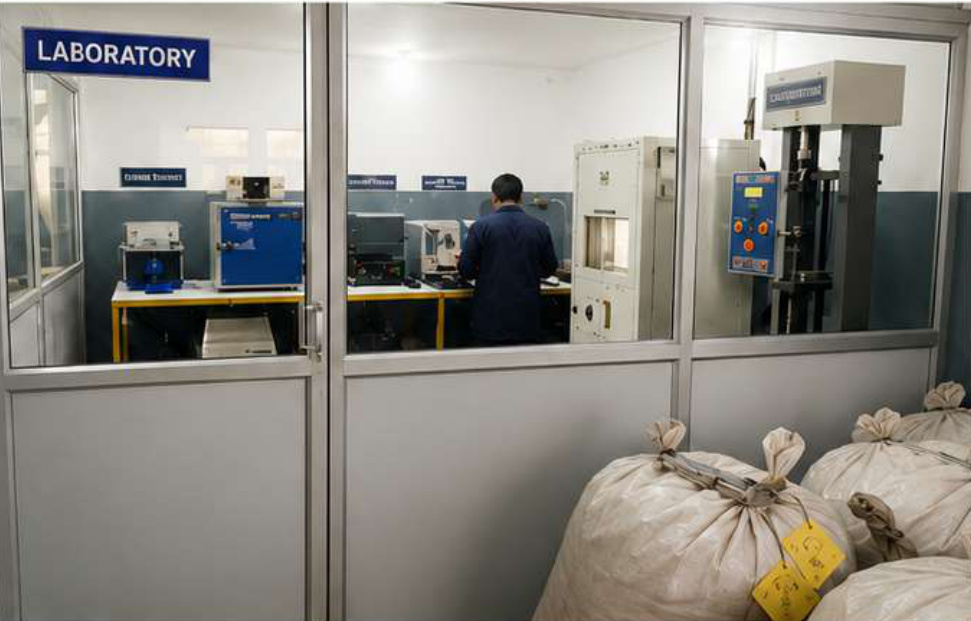
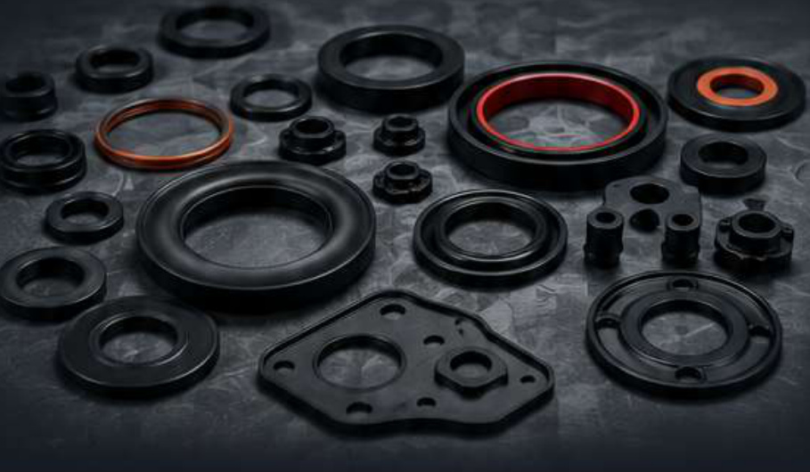
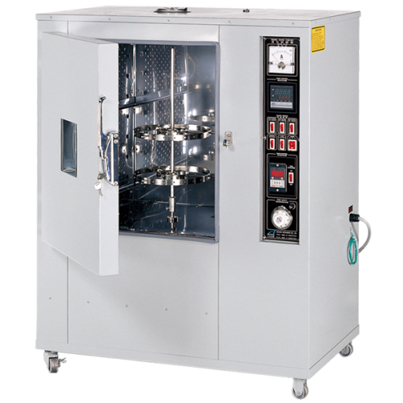
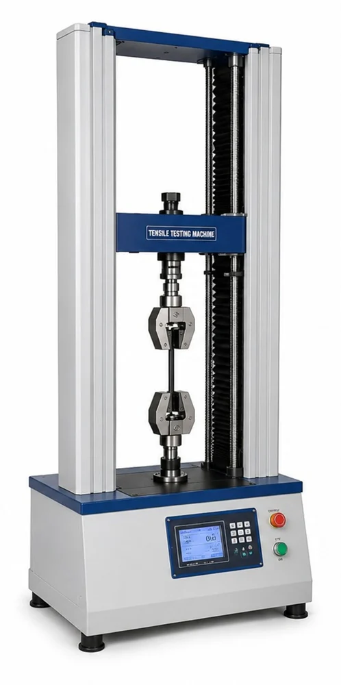
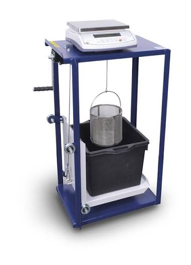
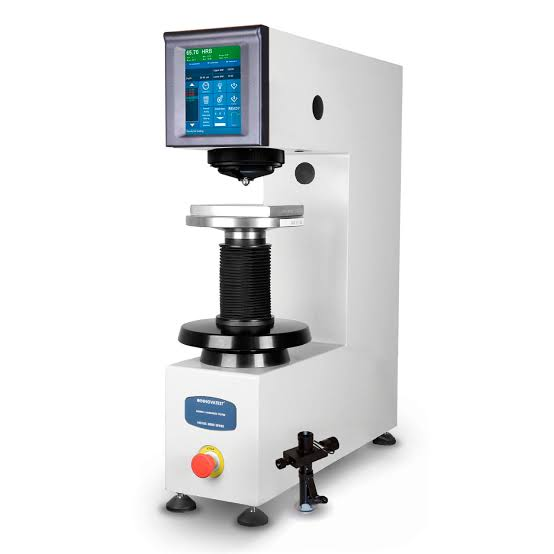
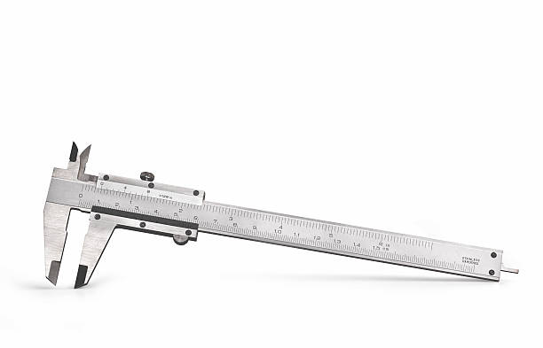
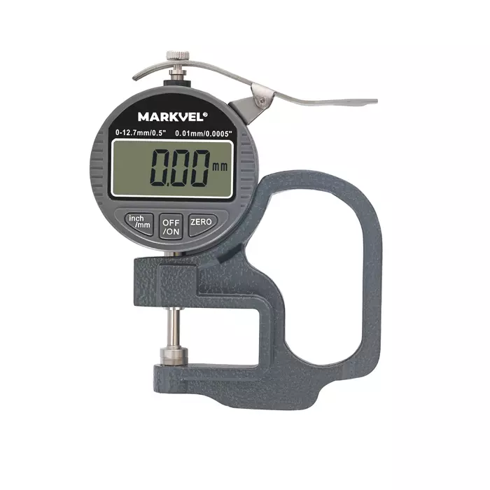
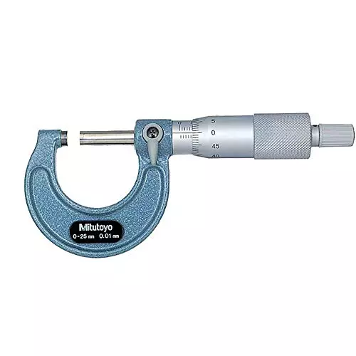
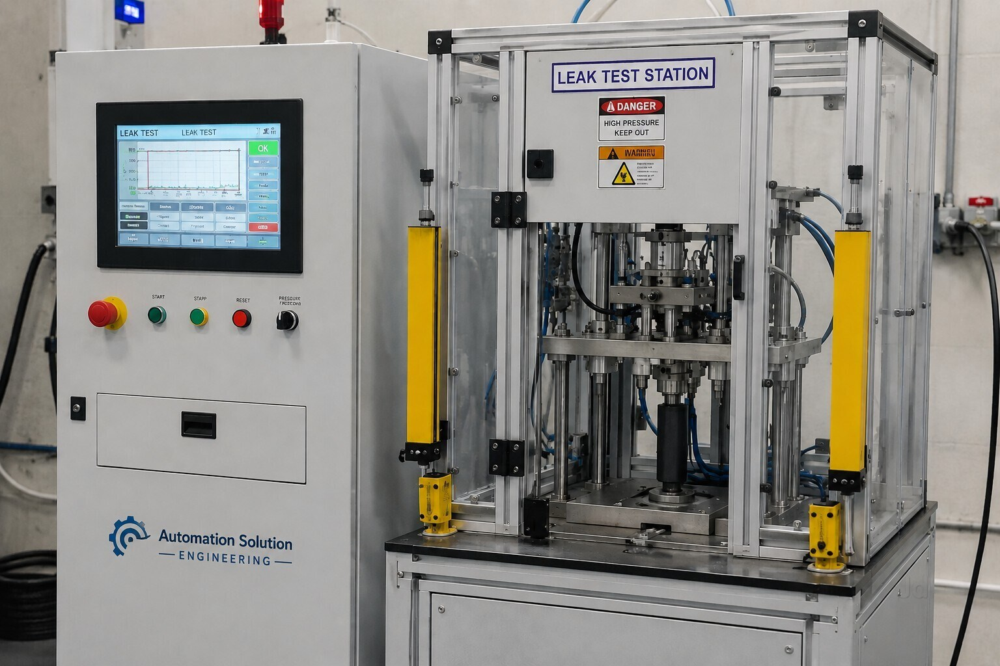

Product Inspection
Inspection instruments help evaluate product dimensions and physical characteristics against applicable requirements.
Quality assurance and product inspection are important parts of our manufacturing approach. Our laboratory facilities support the evaluation of rubber materials and manufactured components.


Our quality-focused approach combines product inspection and available testing facilities to support manufacturing consistency.
From rubber components to plastic parts, inspection activities are guided by relevant product specifications and customer requirements.
A considered approach to product evaluation, inspection and manufacturing consistency.
Inspection instruments help evaluate product dimensions and physical characteristics against applicable requirements.
Available laboratory equipment supports the evaluation of relevant material and component properties.
Quality checks help identify variations and support consistency throughout applicable manufacturing and inspection activities.
Our laboratory equipment and checking instruments support selected testing, measurement and inspection activities for rubber components.
Our laboratory includes equipment and facilities for evaluating selected characteristics of rubber materials and manufactured components.
Equipment identified in the company brochure includes an ageing oven, muffle furnace, tensile testing machine, specific gravity apparatus, rheometer and sample-cutting equipment.
Explore the testing equipment and inspection instruments identified in the company brochure.

Used in applicable ageing procedures to evaluate changes in rubber specimens following controlled exposure.

Supports mechanical testing of specimens under tensile load according to the applicable test method.

Supports specific-gravity or density-related evaluation where required by the testing procedure.

Supports hardness-related evaluation of rubber specimens using the applicable method.

Used for dimensional checking of applicable components and product features.

Supports thickness checking for products where this dimension forms part of the inspection requirements.

Support dimensional checking according to component design and inspection requirements.

The brochure also identifies a rheometer, muffle furnace, computer and sample-cutting equipment within the laboratory.
Product checks help assess relevant dimensions and visible characteristics according to applicable requirements.
Inspection instruments support product checking throughout applicable quality-control activities. Instrument selection depends on component geometry, dimensions and requirements.

The company brochure includes an ISO 9001:2015 certificate. Refer to the original certificate for its issuing body, scope, certificate number and validity details.
Certification information should be verified against the original document before being used for formal compliance claims.

Discuss your rubber or plastic component requirements, product specifications and quality expectations with our team.